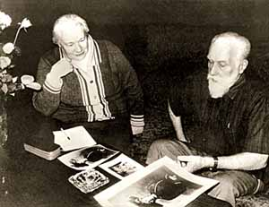

Людмила Васильевна Шапошникова
Рыцарь науки и искусства
Ольга Лавренова
(Газета "Культура" №29 (7539) 27 июня - 2 августа 2006г.)
С сайта http://ivorr.narod.ru/nov/

Индолог и историк, путешественник, писатель, фотохудожник, сценарист, талантливый организатор и руководитель, философ и ученый-космист... Все это сочетается в одном человеке - Людмиле Васильевне Шапошниковой, которой было доверено воплотить в реальность мечту старших Рерихов - Николая Константиновича и Елены Ивановны - о Музейоне, доме Муз, на их Родине.Людмила Шапошникова родилась 26 июля 1926 года в Новочеркасске, в доме известного русского путешественника Г.Н.Потанина, где жила ее бабушка, Мария Николаевна, урожденная Трубецкая. Людмила из рода князей Трубецких, вольнодумцев, философов, защитников Отечества, свое детство провела в Таганроге, среди бескрайних степей, полынным запахом и маревом жаркого дня манивших в неизведанную даль, на берегу Азовского моря.
В 1950 году, оставив позади пять лет учебы на восточном отделении исторического факультета МГУ им. М.В.Ломоносова, она поступила в аспирантуру. Затем успешно защитила диссертацию на соискание ученой степени кандидата исторических наук и была оставлена работать в alma mater на кафедре истории Индии. Научные интересы Л.В.Шапошниковой окончательно сформировались после первой поездки в Индию, стажировки в Хайдерабадском университете в 1958 - 1959 годах. Тогда Людмила Васильевна вживую соприкоснулась с многовековой культурой, с древней традицией, и проблематика рабочего движения (тема ее диссертации) как-то очень быстро начала отходить на второй план... С тех пор на долгое время главной темой ее работ стали культура и этногенез народов Индии - не только научные труды, но и блистательные документальные повести о захватывающих путешествиях и племенах, затерявшихся на дорогах исторического времени. Ее интересовали не великолепие и социальные контрасты больших городов, а самые отдаленные уголки, затерянные в джунглях и горах, где жили таинственные и малочисленные племена, сохранившие первобытно-общинный строй, древние обычаи, мифы и легенды. Во время одной из поездок к племени тода в горах Нильгири она оказалась в районе, где свирепствовала оспа. Помогала местной медсестре отправлять людей, зависших между жизнью и смертью, в больницу - перетаскивала их из хижин в машину... Болезнь не тронула ее, обошла мимо, как и всех тех, кем во времена эпидемий и мора руководило великое сострадание, а не страх за свою жизнь.
Результатом этих поездок стали удивительные книги. В 1967 году правительство Индии высоко оценило научный и литературный труд нашей соотечественницы, присудив ей за книги "По Южной Индии" и "Дороги джунглей" Международную премию имени Джавахарлала Неру.
В 1968 году встреча со Святославом Николаевичем Рерихом круто изменила судьбу Л.В.Шапошниковой. С этого момента многогранное наследие семьи Рерихов стало центральной темой ее философского, научного и публицистического творчества, а философская система Живой Этики, созданная Е.И.Рерих в сотрудничестве с Мудрецами Востока, - концептуальной основой всех ее трудов. Встретившись с известным художником и мудрецом С.Н.Рерихом, Людмила Васильевна "вошла в удивительный, волшебный мир, где продолжал царить дух двух Великих, давших жизнь тому, кто меня позвал. Вошла, чтобы никогда из этого мира не уйти" (Шапошникова Л.В. "Вестник Красоты" // "Культура и время". № 3/4, 2004).
В советское время Л.В.Шапошникова приложила немало усилий, чтобы вернуть Родине философско-художественное наследие Рерихов. В 1973 - 1974 годах по ее сценарию (в соавторстве с Р.А.Григорьевой) режиссером Р.П.Сергиенко был снят полнометражный документальный фильм "Николай Рерих", в котором удалось воссоздать величественный образ русского художника и мыслителя, путешественника и общественного деятеля мирового масштаба.
В 1974 - 1980 годах Людмила Васильевна в одиночку прошла маршрутом великой Центрально-Азиатской экспедиции Н.К.Рериха. Из-за напряженности международных отношений ей оказался недоступен только китайский участок маршрута. Центрально-Азиатская экспедиция Н.К.Рериха привнесла в мировую культуру не только серию прекраснейших пейзажей, написанных великим русским художником на маршруте его путешествия, но и удивительно яркие литературные образы пространства Востока. Спустя полвека Л.В.Шапошникова создала не менее уникальную галерею литературных и фотопейзажей, в которых ощутимо полноприсутствие Красоты. Это и роскошь Алтайских долин, и звенящая открытость монгольских степей, и почти неземная торжественность Гималаев. Эта Красота завораживает, вовлекает в поток извечного движения по лицу Планеты - дорогами переселения народов и великих странников. Созданные ею фотоальбом "От Алтая до Гималаев" и трилогия "Великое путешествие" помогают понять грандиозность беспрецедентной экспедиции Н.К.Рериха, которая прошла тропами Азии в 20-е годы ХХ века.
В конце 1980-х в судьбе Л.В.Шапошниковой, ученого и путешественника, началась новая эпоха - эпоха создания общественного Музея.
Святослав Николаевич во время своих многократных встреч с Людмилой Васильевной не раз возвращался к идее создания Центра-Музея имени Н.К.Рериха на Родине. Однажды он предложил Л.В.Шапошниковой написать концепцию Центра-Музея имени Н.К.Рериха. Задание было неожиданным, и тем не менее вскоре несколько страниц, исписанных размашистым почерком, лежали у него на столе. Святослав Николаевич внимательно прочитал и утвердил без единой поправки.
В 1987 году С.Н.Рерих встретился с М.С.Горбачевым, и итогом этой встречи стало решение о создании Музея имени Н.К.Рериха в Москве. Но распоряжение генсека было положено чиновниками под сукно на долгое время. Когда же перед визитом Горбачева в Индию вдруг "вспомнили" об этом решении, вокруг него началась очень нелицеприятная подковерная борьба государственных мужей. Будущее Центра-Музея оказалось под угрозой. В 1989 году Святослав Николаевич написал свое знаменитое письмо "Медлить нельзя!" (газета "Советская культура" от 29 июля 1989 г.), в котором он настаивал на организации общественного Центра-Музея и предложил в качестве его руководителя Л.В.Шапошникову.
4 ноября 1989 года Постановлением Совета Министров СССР № 950 в Москве были созданы Центр-Музей имени Н.К.Рериха и Советский Фонд Рерихов (СФР, впоследствии переименованный в Международный Центр Рерихов). Это решение было подготовлено благодаря усилиям и организационному таланту Л.В.Шапошниковой. Она смогла отстоять новую зарождающуюся общественную организацию от посягательств заинтересованных госструктур, отстояла и идею Центра-Музея, которую пытались уничтожить. Ею были созданы Устав и все правоустанавливающие документы СФР, созвана учредительная конференция, которая предшествовала Постановлению Совета Министров. В этом же году во время своей поездки в СССР Святослав Николаевич официальным письмом пригласил заместителя председателя правления СФР Л.В.Шапошникову в Индию для работы с наследием Рерихов. В мае 1990 года спецрейсом она доставила четыре тонны драгоценного груза в Москву.
Под руководством Л.В.Шапошниковой без привлечения бюджетных средств был поднят из руин уникальный памятник архитектуры XVII - XIX веков - Усадьба Лопухиных. В обновленном и оборудованном по последнему слову музейной техники здании разместился Центр-Музей, созданный в соответствии с пожеланиями С.Н.Рериха, высказанными в открытом письме "Медлить нельзя!". Здесь же в 1999-м, юбилейном для семьи Рерихов году появился Мемориал, посвященный Елене Ивановне и Николаю Константиновичу Рерихам.
Свершилось, казалось бы, невозможное - на территории России возник первый независимый общественный музей, не имеющий аналогов за рубежом и воплотивший мечту Н.К.Рериха о многогранном культурном и научном просветительском центре, Центре-Музее. В нем воплотилась в полной мере и концепция культуры Н.К.Рериха. Триединый комплекс - Усадьба, Музей, наследие Рерихов - стал выражением мысли о единстве прошлого, настоящего и будущего в извечном круге культуры. Музей продолжает развиваться, непрестанно совершенствуется его концепция, его бессменным руководителем закладываются вехи будущих свершений на многие десятилетия вперед.
Центр-Музей развивается и как научный комплекс. Как и многие выдающиеся ученые, Л.В.Шапошникова проявила себя как талантливый организатор науки, поэтому особо следует отметить научно-общественные конференции, проводимые Международным Центром-Музеем им. Н.К.Рериха (МЦР). В текстах Живой Этики много внимания уделено значению науки для формирования новой, энергетической картины мира, которая помогла бы человечеству выйти на новый эволюционный виток. Наследие Рерихов, не только переданное в Центр-Музей, но и ранее опубликованное, безусловно, требует глубочайшей научной разработки. Новые работы Людмилы Васильевны, написанные уже в эпоху строительства музея, шли в русле той самой одухотворенной науки, которая вовлекала в круг своего пристального внимания сложный духовный мир человека, космические законы его развития. Ее научно-организационное творчество во многом наследовало принципы работы Института Гималайских исследований "Урусвати", созданного Рерихами в Кулу. Как и институт "Урусвати", МЦР начал свое вхождение в мир науки с международного научного сотрудничества, с объединения передовых ученых, работающих в самых разных направлениях и областях. Сейчас научная методология, разработанная Рерихами, не только возрождается, но и развивается Л.В.Шапошниковой, под ее руководством начал работу новый междисциплинарный проект - Объединенный Научный Центр проблем космического мышления.
Под руководством и при непосредственном участии Л.В.Шапошниковой разрабатывается тематика научных семинаров и лекционных циклов, ведется большая работа по научно-музейной обработке документов и материалов рукописного наследия. При Центре-Музее успешно работает научно-общественное подразделение "Гуманная педагогика" под руководством академика РАО Ш.А.Амонашвили. Издательской группой МЦР выпущено свыше ста печатных изданий, разработчик концепции и автор предисловий к большинству из них - Л.В.Шапошникова. Она также является главным редактором общественно-научного и художественного журнала "Культура и Время", выпускаемого МЦР.
Перу Людмилы Васильевны Шапошниковой принадлежат около трехсот печатных трудов. На их страницах оживают древние символы и легенды, становятся зримыми великие законы мироздания и тайны мировой истории. Каждая ее книга - откровение для читателя, каждая открывает удивительный мир - от описания традиций национальных культур племен Индии до потрясающих глубин философии истории и культуры. Это книги-мистерии, обучающие бережному и трепетному отношению к миру, к его самым сокровенным понятиям, к его Красоте.
Стройность и универсальность Живой Этики как философии реального космоса, как методологической основы новой системы познания нашла свое отражение во многих ее книгах и статьях, в предисловии к новому, научному изданию книг Живой Этики. Наиболее полно эта тема представлена в третьей книге трилогии "Великое путешествие" - "Вселенная Мастера", открывшей читателям воочию мир иных, более высоких измерений, в котором формировалась и раскрывалась, как чудесный огненный цветок, Великая Мысль, обретшая свою форму в Живой Этике, во всем творчестве Рерихов. В этой книге Л.В.Шапошниковой дано современное прочтение и систематизация этой философии, автор дает читателю возможность цельного восприятия мира в ключе космического мировоззрения. "Вселенная Мастера" - живая летопись культуры как важнейшего устоя космической эволюции, как самоорганизующейся системы духа. Книга дает возможность увидеть воочию процесс культурогенеза, причем с совершенно иной точки зрения, - в нем субъектами эволюции выступают Космические Иерархи, которые были с человечеством от начала времен, словно ведя его за руку. Через культуру проявляются аспекты самой Вселенной: бесконечность, неуничтожимость, иерархия, развитие скачкообразное, взрывами, революциями... Культура одухотворяет земную косную материю, соединяет Небо и Землю.
Книга Л.В.Шапошниковой "Тернистый путь Красоты" была награждена Дипломом Российской ассоциации книгоиздателей. Это произведение полиграфического искусства сочетает в себе фундаментальную философию творчества и художественный альбом (Людмила Васильевна в данном случае выступила не только как автор текста, но также как автор художественного оформления и макета). Шедевры мировой художественной культуры, собранные под единой обложкой, несут в себе свет духовных взлетов прошлого. И автор учит читателя новому видению, пониманию Красоты как радужного моста между мирами - земным и горним, к осознанию ее определяющей и ведущей роли в эволюции человечества.
Л.В.Шапошникова - заслуженный деятель искусств РФ, сопрезидент международных культурных проектов "Знамя Мира", "День Земли", "Колокол Мира" и "Флаг Земли", осуществляемых под эгидой ООН. Она - инициатор проведения "круглых столов" совместно с Государственной Думой РФ, посвященных наследию Рерихов. В 1996 году в Госдуме прошли рериховские чтения "Наследие Рерихов. Мифы и реальность", "Эволюционное учение Живой Этики", "Новое мышление и Россия", основным докладчиком была Л.В.Шапошникова. Она принимала участие в "круглом столе" Московской Хельсинкской группы "Индия и Россия: традиции миролюбия и ненасилия". МЦР уже много лет тесно сотрудничает с Федерацией космонавтики РФ.
За заслуги перед отечественной культурой Российская академия естественных наук присвоила Людмиле Васильевне звание академика РАЕН, наградила почетным знаком "Рыцарь науки и искусства". Список ее наград и званий вряд ли уместится на одной странице, поэтому следует лишь добавить, что она является действительным членом еще двух академий - Российской академии космонавтики имени К.Э.Циолковского и Российской экологической академии, созданной А.Л.Яншиным.
Людмила Васильевна Шапошникова - достойный последователь созидательных идей великой семьи Рерихов, одна из немногих, кто действительно реализовал эти идеи в своей жизни, показав неисчерпаемость творческих возможностей человека, вдохновленного космической Красотой.